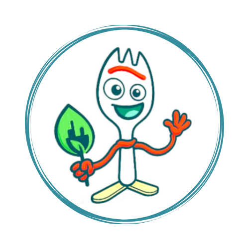

Para descartar corretamente o lixo eletrônico, o primeiro passo é identificar pontos de coleta autorizados. Estes podem ser centros de reciclagem, estabelecimentos comerciais, escolas ou instituições públicas que participam de programas de logística reversa.
Antes de levar seus aparelhos, certifique-se de remover dados pessoais (em celulares e computadores) e separar os dispositivos por tipo: pilhas, baterias, fios, eletrodomésticos, entre outros.
Evite jogar eletrônicos no lixo comum, pois isso pode causar contaminação ambiental. Ao realizar o descarte correto, você ajuda a diminuir os impactos ambientais e ainda contribui com o reaproveitamento de materiais.
Muitos programas ainda oferecem incentivos, como descontos na compra de novos produtos ou benefícios sociais, promovendo a economia circular.